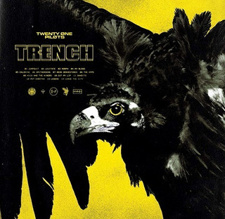

Dueto Musical Twenty One Pilots
El dueto musical llamado Twenty One Pilots es un dueto estadounidense de colombus ohio.
La banda se formo en 2009 por el vocalista Tyler Jhoseph junto con Nick Thomas y Chris Salih,
quienes se fueron en 2011. Desde su partida, la formacion ha consistido en Tyler Jhoseph y el baterista Josh Dun
La banda se formo en 2009 por el vocalista Tyler Jhoseph junto con Nick Thomas y Chris Salih,
quienes se fueron en 2011. Desde su partida, la formacion ha consistido en Tyler Jhoseph y el baterista Josh Dun
